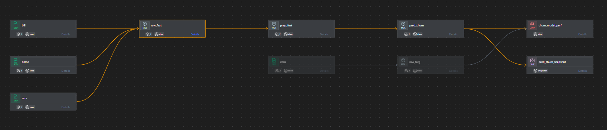
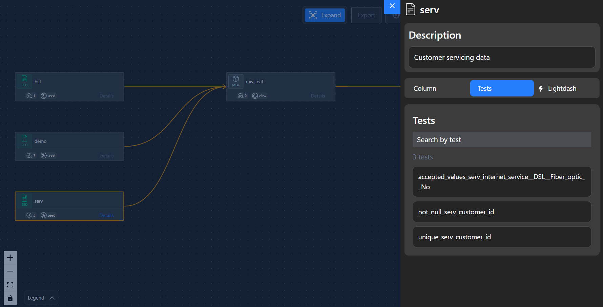
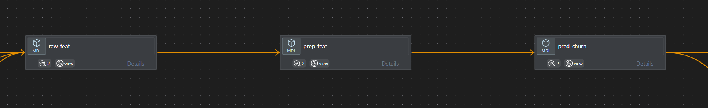
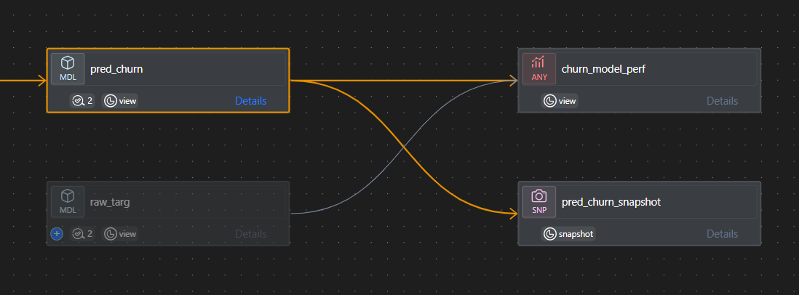

import duckdb
import polars as pl
with duckdb.connect('dev.duckdb') as con:
df_serv = con.table('serv').pl()
df_bill = con.table('bill').pl()
df_demo = con.table('demo').pl()
df_chrn = con.table('chrn').pl()So, you build a great predictive model. Now what?
MLOps is hard. Deploying a model involves different tools, skills, and risks than model development. This dooms some data science projects to die on their creator’s hard drive.
Tools like dbt and SQLMesh entered the scene to solve a similar problem for data analysts. These tools offer an opinionatee frameowrk for organizing multiple related SQL scripts into fully tested, orchestrated, and version conotrolled projects. Data analysts can deliver end-to-end pipelines by applying their existing business context, SQL experience, and database modeling1 acumen into existing infrastructure, resulting in the rise of “analytics engineering”.
So what is the dbt for data scientists doing MLOps? It turns out, it might just be… dbt! (Enter caveats galore).
Posit’s recently announced orbital project2 translates feature enginering and model scoring code into raw SQL code for supported model types (e.g. linear, tree-based) trained in scikit-learn pipelines (python) and tidymodels workflows. Similar to dbt, this has the potential to help data scientist’s deploy their own models batch-scoring models using existing tools (R, python, SQL) an infrastructure (analytical database) by creating a new table or view in their data warehouse (or pointing duckdb against their data lake!) Coupled with dbt, could orbital unlock “good enough”, zero-infra MLOps practices in a resource-contrained environment?
In this post, I explore a workflow for using orbital and dbt for zero-infrastructure deployment of batch models inside of a dbt pipeline. We’ll discuss:
- what makes MLOps hard
- when database/
dbt-based deployment might help - a reference implementation and workflow for
dbt+orbital3 - how preexisting
dbt+orbitalfeatures address common MLOps pain points - limitations and caveats to the above approach
Along the way, we’ll walk through this demo implementation of a churn prediction model (wow, what a cliche). The demo is fully self-contained with open data and a duckdb backend if you want to pull it down and play along!
R and python compatibility
My example in this post uses the orbital python package to translate a scikit-learn pipline to SQL. However, there is also an orbital R package that can translate tidymodels. This post is more about the workflow of preparing and consuming orbital output in dbt, so it’s mostly useful for either language.
MLOps Challenges
Predictive modeling requires nuanced, detailed thinking; MLOps requires systems thinking. Success requires an unlikely combination of skills including a deep understanding of the business problem, the modeling workflow, and engineering principles. Some key challenges include:4
- Data management & testing
- Pre-modeling (not exactly MLOps) – test source data upstream of the initial query for better visibility into quality errors or concept drift
- Scoring time – preventing scoring on features ranges not seen in training when this poses inordinate risk
- Recreating the development / evaluation environment
- Feature transformations – ensuring feature availability in prod (no leakage!) and same transformation logic as dev
- Environment management – controling package versions and dependencies for scoring code
- Versioning – tracking changes to the model over time
- Serving relevance
- Access – controlling access to intended consumers and delivering to platform they can use
- Reliability – ensuring predictions are retrievable on-demand
- Reproducibility / Observability
- Snapshotting – ability to store past predictions for auditability and performance monitoring
- Testing – inserting tests at relevant points in the pipeline, providing observability and automated error handling
- Logging – ensuring general system observability of performance, errors, retries, and latency
These technical challenges are exacerbated by cultural factors. In small companies, data teams may be small (or even a data team-of-one) and lack bandwidth for model deployment, engineering-focused skillsets, access to enterprise-grade tools, or stakeholders who would know how to consume model predictions published in bespoke environments. In large companies, modelers may not be allowed access to production systems required for deployment, so handoffs often require prioritization and context sharing across multiple teams.
Deploying to the database
For the right use cases, publishing predictions back into an analytical warehouse can be an attractive proposition. This approach is best suited for offline batch scoring, such as models that:
- drive bulk actions in downstrean CRMs, e.g. marketing segments to drive targeted emails5
- inform human decision-making, e.g. individual predictions that rollup into quarterly sales forecast dashboard
- are reincorporated in downstream analysis similar to raw data, e.g. model validation and backtesting, publish a set of propensity scores back into a clinical database
In such cases, there are many advantages of having model predictions in the database:
- Fast & accurate deployment: SQL-based deployment means you can deploy your data against exactly the same data is was trained on, reducing the risk of feature drift between dev and prod. Similarly, it reduced ongoing headaches of dependency management since SQL is generally a stable language6 and does not depend on external packages.
- Data management tools: Features, scores – at the end of the day its all just data flow. Having predictions in the database unlocks the ability to leverage on other features integrated in your database like access controls, data quality checks, scheduled updates, incremental loads, and snapshots.
- Integration: Many modern data stacks have their analytical data warehouse connected to many other business-critical systems like dashboards and CRMs (e.g. MailChimp) or are easy to integrate via numerous reverse ETL solutions. Serving predictions to a warehouse is a great first step to syncing them beyond the warehouse in the platforms where they can drive actions like customer contacts.
- Development language agnosticism: For R users tired of the “we don’t put R in production” conversations, SQL provides a generic abstraction layer to “hand off” a model object regardless of how it was developed
Conversely, this solution is poorly suited for real-time models where models are scored for single observations on the fly. I share a few more thoughts on when this solution is not well-suited in the final section of this post, Section 4.
orbital + dbt Pattern
To demonstrate how an orbital + dbt pattern could work, I’ll walk through this example project, using IBM’s telcom churn dataset. The project mostly is mostly structured like a standard dbt project with most of the model training and orbital code in this additional notebook.
Churn prediction might be a good candidate for batch scoring. Each month, accounts reaching their resubscription date could be scored and published to a database. Scores might then be used analytical use cases like monitoring or revenue forecasting and operational use cases like ingesting segments into a CRM to email targeted retention offers.
We’ll work up to this final pipeline:

The point of this exercise is to think about the orbital and dbt architecture, so the model we deploy will be quite uninventive. Pull down some features, one-hot encode, fit a random forest, and do it all in a (gasp) Jupyter notebook. (Please dont’ do this.)
Key Features and Design Choices
If you want the TLDR, I’ll briefly explain the key design choices for this pipeline:
- Initial Data Preparation
- Set up
dbt tests to test sources before joining your feature table. This can better catch dropout from failed joins, newly emerging encoded categories, etc. Consider what additional filters you want to put in downstream tables (Better to “alert and allow” and “block until fixed”?) - Prepare feature separately (for normalization) but join different features in database to take advantage of database processing
- Consider adding random number in training table for reproducible test/train split (this has to be linked to hash or something about the entities your randomizing to ensure reproducibility without regard to ordering of data samples)
- Set up
- Feature Engineering
- Create separate
scikit-learnpipelines and/ortidymodelsworkflows for the feature engineering and training steps so you can render these as separate queries. This can enable better data testing and make queries more efficient soorbitaldoes not repeat the feature transformation logic - Use test-driven development to update
dbtdata tests as you develop. For example, encoding a categorical? Immediately add an upstream test to check for previously unseen values.
- Create separate
- Preparing
orbitalSQL (supported bysqlglot)- Add back your identifier column to the query so predictions are joinable
- Add a model version field into the query for better context to users
- Change placeholder table to a
dbtref() - Rename columns to remove
.s so you do not have to always quote in queries - Output nicely formatted version for readability
- Deploying as a model
- Consider carefully whether to make a table, view, or macro depending on your specific database, query latency, and desire to score bespoke populations
- Observability, logging, and error handling
- Use
dbt snapshotsto save timestamped past predictions and feature values if these can change over time. This improves auditability and future analysis - Execute tests to
--store-failuresto detect changes in your data that might require model retraining or additional error handling - Check out
dbtpackages like elementary to log more aspects of the model run process
- Use
Set-Up
The sample IBM data is provided as “one big table”, so I break things up to look a bit more like normalized database data representing subscription information, billing information, demographics, and churn targets. I also add a few columns to simulate different months, censor data I want to pretend is in the future, and add a few data errors for fun.
Here’s a preview of the resulting tables, connected by a customer_id primary key:
df_serv.glimpse()Rows: 7043
Columns: 12
$ customer_id <str> '7590-VHVEG', '5575-GNVDE', '3668-QPYBK', '7795-CFOCW', '9237-HQITU', '9305-CDSKC', '1452-KIOVK', '6713-OKOMC', '7892-POOKP', '6388-TABGU'
$ tenure <i32> 1, 34, 2, 45, 2, 8, 22, 10, 28, 62
$ phone_service <str> 'No', 'Yes', 'Yes', 'No', 'Yes', 'Yes', 'Yes', 'No', 'Yes', 'Yes'
$ multiple_lines <str> 'No phone service', 'No', 'No', 'No phone service', 'No', 'Yes', 'Yes', 'No phone service', 'Yes', 'No'
$ internet_service <str> 'DSL', 'DSL', 'DSL', 'DSL', 'Fiber optic', 'Fiber optic', 'Fiber optic', 'DSL', 'Fiber optic', 'DSL'
$ online_security <str> 'No', 'Yes', 'Yes', 'Yes', 'No', 'No', 'No', 'Yes', 'No', 'Yes'
$ online_backup <str> 'Yes', 'No', 'Yes', 'No', 'No', 'No', 'Yes', 'No', 'No', 'Yes'
$ device_protection <str> 'No', 'Yes', 'No', 'Yes', 'No', 'Yes', 'No', 'No', 'Yes', 'No'
$ tech_support <str> 'No', 'No', 'No', 'Yes', 'No', 'No', 'No', 'No', 'Yes', 'No'
$ streaming_tv <str> 'No', 'No', 'No', 'No', 'No', 'Yes', 'Yes', 'No', 'Yes', 'No'
$ streaming_movies <str> 'No', 'No', 'No', 'No', 'No', 'Yes', 'No', 'No', 'Yes', 'No'
$ dt_renewal <date> 2025-07-01, 2025-07-01, 2025-07-01, 2025-07-01, 2025-07-01, 2025-07-01, 2025-08-01, 2025-07-01, 2025-07-01, 2025-07-01
df_bill.glimpse()Rows: 7043
Columns: 6
$ customer_id <str> '7590-VHVEG', '5575-GNVDE', '3668-QPYBK', '7795-CFOCW', '9237-HQITU', '9305-CDSKC', '1452-KIOVK', '6713-OKOMC', '7892-POOKP', '6388-TABGU'
$ contract <str> 'Month-to-month', 'One year', 'Month-to-month', 'One year', 'Month-to-month', 'Month-to-month', 'Month-to-month', 'Month-to-month', 'Month-to-month', 'One year'
$ paperless_billing <str> 'Yes', 'No', 'Yes', 'No', 'Yes', 'Yes', 'Yes', 'No', 'Yes', 'No'
$ payment_method <str> 'Electronic check', 'Mailed check', 'Mailed check', 'Bank transfer (automatic)', 'Electronic check', 'Electronic check', 'Credit card (automatic)', 'Mailed check', 'Electronic check', 'Bank transfer (automatic)'
$ monthly_charges <f64> 29.85, 56.95, 53.85, 42.3, 70.7, 99.65, 89.1, 29.75, 104.8, 56.15
$ total_charges <f64> 29.85, 1889.5, 108.15, 1840.75, 151.65, 820.5, 1949.4, 301.9, 3046.05, 3487.95
df_demo.glimpse()Rows: 7043
Columns: 5
$ customer_id <str> '7590-VHVEG', '5575-GNVDE', '3668-QPYBK', '7795-CFOCW', '9237-HQITU', '9305-CDSKC', '1452-KIOVK', '6713-OKOMC', '7892-POOKP', '6388-TABGU'
$ gender <str> 'Female', 'Male', 'Male', 'Male', 'Female', 'Female', 'Male', 'Female', 'Female', 'Male'
$ senior_citizen <i32> 0, 0, 0, 0, 0, 0, 0, 0, 0, 0
$ partner <str> 'Yes', 'No', 'No', 'No', 'No', 'No', 'No', 'No', 'Yes', 'No'
$ dependents <str> 'No', 'No', 'No', 'No', 'No', 'No', 'Yes', 'No', 'No', 'Yes'
df_chrn.glimpse()Rows: 7043
Columns: 2
$ customer_id <str> '7590-VHVEG', '5575-GNVDE', '3668-QPYBK', '7795-CFOCW', '9237-HQITU', '9305-CDSKC', '1452-KIOVK', '6713-OKOMC', '7892-POOKP', '6388-TABGU'
$ churn <str> 'No', 'No', 'Yes', 'No', 'Yes', 'Yes', 'No', 'No', 'Yes', 'No'
Ultimately, these are saved as seeds in the dbt project as a lightweight way to ingest small CSVs; in reality, they would be my sources flowing into my data warehouse from other production sources.
Features & Training
Feature preparation and training are the heart of where orbital fits into our pipelines. I recommend doing these steps one-at-a-time and explain them similarly. However, since the code is closely coupled, I’ll provide it at once for reference. The combination of feature engineering and model training steps look like this:
Pipeline to orbital
# build pipeline(s)
## feature pipeline does OneHotEncoding on all string columns (all are low/known cardinality)
## orbital can create some very verbose variable names (for uniqueness) so we clean those up some
cols_str = X.select( cs.string() ).columns
onho_enc = ('oh', OneHotEncoder(sparse_output = False), cols_str)
ppl_feat = Pipeline([
("encoder", ColumnTransformer([onho_enc], remainder='passthrough'))
]).set_output(transform="polars")
X_tran = ppl_feat.fit_transform(X, y)
X_tran.columns = [c.replace(' ','_').replace('-','_').replace('(','').replace(')','') for c in X_tran.columns]
## training pipeline fits actual random forest model
ppl_pred = Pipeline([
("prep", ColumnTransformer([], remainder='passthrough')),
("pred", RandomForestClassifier(max_depth=3, n_estimators=100, random_state=123))
])
ppl_pred.fit(X_tran, y)
# convert to orbital
tbl = "TBL_REF" # placeholder replaced in cleaning
## creating mapping of source data types to orbital types
type_map = {
pl.String:orbital.types.StringColumnType(),
pl.Int32:orbital.types.Int32ColumnType(),
pl.Float64:orbital.types.DoubleColumnType()
}
dict_feat = {e: type_map.get(t) for e, t in zip(X.columns, X.dtypes)}
dict_pred = {e: type_map.get(t) for e, t in zip(X_tran.columns, X_tran.dtypes)}
## features
orb_ppl_feat = orbital.parse_pipeline(ppl_feat, features=dict_feat)
sql_raw_feat = orbital.export_sql(tbl, orb_ppl_feat, dialect="duckdb")
## scoring
orb_ppl_pred = orbital.parse_pipeline(ppl_pred, features=dict_pred)
sql_raw_pred = orbital.export_sql(tbl, orb_ppl_pred, dialect="duckdb")Features
Feature prep is the first use case for integrating orbital code in our dbt pipeline. Ultimately, we want to be sure our production features are identical to our development features. To do this, we make three design choices:
- Prepare raw features in the database (pre-joining) to take advantage of database-grade computational power and have preprocessing “published” to fuel different model experimentation
- Adding a model
raw_featto my dbt project that simply pre-joins relevant sources
- Adding a model
- Make separate
scikit-learnpipelines andorbitalSQL output for feature and training steps for separate testing and faster scoring (Otherwise,orbital-generated SQL sometimes reproduces feature transformation logic at every use of the feature versus doing it once upfront. Depending one your database’s optimizer, it may or may not be smart enough to reorder this at runtime.)- In python, fit the
ppl_featpipeline (cell 4) which only fits the feature transformation steps - Retrieve the resulting SQL code from
orbitaland clean it up (discussed below) - Deploy it by writing the SQL back to the
models/folder as a modelprep_feat
- In python, fit the
- Noting the assumptions we are making about our data while engineering features and pushing those tests upstream to the source in the database
- For example, one-hot encoding assumes the categories won’t change. So, since we are one-hot encoding the
internet_servicefield from source, we can update ourschema.ymlfile to add anaccepted_valuesdata test for that field to warn us if our model is beginning to see data is was not prepared to handle7. Subsequent data models could, in theory, route these cases away from our scoring table and into a separate logging table for separate handling.
- For example, one-hot encoding assumes the categories won’t change. So, since we are one-hot encoding the
This way, we can deploy our exact features to the database separately from our final model for additional data validation. We can also run our dbt tests before consuming the results to ensure the assumptions that went into feature creation still hold.
Again, because we are using dbt, we can take advtange of related tools. Using the VS Code extension, we can examine our database’s DAG so far and see that our data test was correctly placed on the source:

Training
Model training follows similarly. We create another sci-kit-learn pipline ppl_pred and train it (cell 4). This time, we just use the preprocessed data that was fit_transformed in the prior step. Alternatively, we could re-retrieve our newly prepared features from the database.
In theory, this is where we’d also do a lot of model evaluation and iteration where being outside of the database in a joy. I don’t do this since getting a good model is not my goal.
SQL Cleanup
While orbital does a lot of heavy lifting, the SQL it produces is not perfect:
- It does not
SELECTany metadata or identifier columns, rendering your predictions impossible to join to other data sources. Inserting this column requires care because sometimes the upstream data is being queried within the main query and other times it is queried in a CTE - Its hard to get
orbitalto query from aref()that plays nice withdbt’s Jinja becauseorbitalis rigorous about quoting table and column names. So, it’s easier to put a placeholder table name and edit it in post-processing. - It uses somewhat long and bulky variable names that reflect
scikit-learninternals, including.s in column names which can reduce readability and requires quoting since.usually means something different in SQL - It includes positive predictions, negative predictions, and labels which may be excessive. I’ve never wanted anything more than the positive predictions
- It’s not formatted which shouldn’t matter but will wrankle anyone who has ever worked with SQL
To mitigate these multiple issues, sqlglot makes it easy to further parse the query. sqlglot is a package that allows you to turn any SQL script into an AST for ease of programatic modification. I defined a helper function with sqlglot to fix all of the above.
Cleaning function definition
import sqlglot
from sqlglot import parse_one, exp
def clean_sql(sql_raw: str,
tbl_ref: str,
model_version: str = None,
col_id: str = 'id',
cols_renm: dict[str, str] = {'output_probability.1':'pred',
'output_probability.0': '0',
'output_label': '0'},
) -> str:
"""Opinionated clean-up of SQL returned by orbital
This function executes the following transformations:
- Rename desired columns such as the prediction column (per result of cols_renm)
- Remove unwanted variables (those being "renamed" to "0")
- Add back ID variable for joining predictions to other datasets
- Fix table reference from default TBL_REF to a specific dbt model reference
- Reformats SQL for improved readability
Parameters
----------
sql_raw: SQL string provided by `orbital`
tbl_ref: Name of dbt model to be referenced in query's FROM clause
model_version: Version number of model to be added as own column. Defaults to None to add no column
col_id: Name of the column representing the unique identifier of entities to be predicted
cols_renm: Dictionary of {default_name: desired_name} to rename fields
Returns
-------
str
A formatted and updated SQL query
"""
ast = parse_one(sql_raw)
for e in ast.expressions:
# rename prediction column
if cols_renm.get(e.alias) == '0':
e.set(arg_key='this',value=None)
e.set(arg_key='alias',value=None)
if e.alias in cols_renm.keys():
e.set(arg_key='alias',value=cols_renm.get(e.alias))
# add back a variable for reference (typically like an ID for joining to other tables)
# this is tricky because sometimes orbital uses CTEs and other times it doesn't;
# generally, we need to get the identifier inside the CTE if it exists
col = exp.Column(this=exp.to_identifier(col_id))
if ast.find(exp.CTE) is not None:
cte_select = ast.find(exp.CTE).this
cte_select.expressions.append(col)
ast = ast.select(col_id)
# add model version to outer query if desired
if model_version is not None:
col_version = exp.Alias(
this=exp.Literal.string(model_version),
alias="model_version")
ast.find(exp.Select).expressions.append(col_version)
# pretty print
sql_fmt = sqlglot.transpile(ast.sql(),
write="duckdb",
identify=True,
pretty=True)[0]
# change out table to dbt reference
ref_str = f"{{{{ ref('{tbl_ref}')}}}}"
sql_fnl = sql_fmt.replace('"TBL_REF"', ref_str)
return sql_fnlI run the SQL generated from both ppl_feat and ppl_rafo through this function before writing them to models/churn_model/prep_feat.sql and models/churn_model/pred_churn.sql in my dbt models/ directory.
This establishes our core model deployment pipeline:

Scoring, Preserving, and Activating Predictions
We now have a table in our database that has our churn model predictions! Here is where we can begin to utilize the full benefit of the data management tools that dbt has built in.
Before scoring, we can run our dbt test to ensure that our features are stable and valid.
For scoring, depending on our use case we can set the table materialization to be a table (rebuilt on a schedule) or a view (generated on the fly for a specific population).
For archiving past scores, we can update our dbt-project.yml to include snapshotting our predictions table. This means even if we publish our tables as a view, we could schedule a call to dbt snapshot on a regular basis to record a timestamped record of what our scores were at any given point in time. This could be useful for model monitoring or auditiability. For example, if we are using our churn model to segment a marketing campaign, we might need these scores later to determine who got what treatment in the campaign.
For staging analysis, we can use dbt analyses to render the scripts that might be needed to conduct model monitoring (e.g. merging past scores with observed targets.)
We can see examples of these different artifacts branching off of our DAG:

Datamart Preview
Below, we can tour the resulting datasets:
import duckdb
import polars as pl
with duckdb.connect('dev.duckdb') as con:
df_feat = con.table('raw_feat').pl()
df_prep = con.table('prep_feat').pl()
df_pred = con.table('pred_churn').pl()
df_snap = con.table('main_snapshots.pred_churn_snapshot').pl()
df_fail = con.table('main_audit.accepted_values_serv_internet_service__DSL__Fiber_optic__No').pl()df_feat.glimpse()Rows: 6944
Columns: 21
$ customer_id <str> '7590-VHVEG', '5575-GNVDE', '3668-QPYBK', '7795-CFOCW', '9237-HQITU', '9305-CDSKC', '1452-KIOVK', '6713-OKOMC', '7892-POOKP', '6388-TABGU'
$ cat_train_test <str> 'Train', 'Train', 'Train', 'Train', 'Train', 'Train', 'Train', 'Train', 'Train', 'Train'
$ tenure <i32> 1, 34, 2, 45, 2, 8, 22, 10, 28, 62
$ phone_service <str> 'No', 'Yes', 'Yes', 'No', 'Yes', 'Yes', 'Yes', 'No', 'Yes', 'Yes'
$ multiple_lines <str> 'No phone service', 'No', 'No', 'No phone service', 'No', 'Yes', 'Yes', 'No phone service', 'Yes', 'No'
$ internet_service <str> 'DSL', 'DSL', 'DSL', 'DSL', 'Fiber optic', 'Fiber optic', 'Fiber optic', 'DSL', 'Fiber optic', 'DSL'
$ online_security <str> 'No', 'Yes', 'Yes', 'Yes', 'No', 'No', 'No', 'Yes', 'No', 'Yes'
$ online_backup <str> 'Yes', 'No', 'Yes', 'No', 'No', 'No', 'Yes', 'No', 'No', 'Yes'
$ device_protection <str> 'No', 'Yes', 'No', 'Yes', 'No', 'Yes', 'No', 'No', 'Yes', 'No'
$ tech_support <str> 'No', 'No', 'No', 'Yes', 'No', 'No', 'No', 'No', 'Yes', 'No'
$ streaming_tv <str> 'No', 'No', 'No', 'No', 'No', 'Yes', 'Yes', 'No', 'Yes', 'No'
$ streaming_movies <str> 'No', 'No', 'No', 'No', 'No', 'Yes', 'No', 'No', 'Yes', 'No'
$ gender <str> 'Female', 'Male', 'Male', 'Male', 'Female', 'Female', 'Male', 'Female', 'Female', 'Male'
$ senior_citizen <i32> 0, 0, 0, 0, 0, 0, 0, 0, 0, 0
$ partner <str> 'Yes', 'No', 'No', 'No', 'No', 'No', 'No', 'No', 'Yes', 'No'
$ dependents <str> 'No', 'No', 'No', 'No', 'No', 'No', 'Yes', 'No', 'No', 'Yes'
$ contract <str> 'Month-to-month', 'One year', 'Month-to-month', 'One year', 'Month-to-month', 'Month-to-month', 'Month-to-month', 'Month-to-month', 'Month-to-month', 'One year'
$ paperless_billing <str> 'Yes', 'No', 'Yes', 'No', 'Yes', 'Yes', 'Yes', 'No', 'Yes', 'No'
$ payment_method <str> 'Electronic check', 'Mailed check', 'Mailed check', 'Bank transfer (automatic)', 'Electronic check', 'Electronic check', 'Credit card (automatic)', 'Mailed check', 'Electronic check', 'Bank transfer (automatic)'
$ monthly_charges <f64> 29.85, 56.95, 53.85, 42.3, 70.7, 99.65, 89.1, 29.75, 104.8, 56.15
$ total_charges <f64> 29.85, 1889.5, 108.15, 1840.75, 151.65, 820.5, 1949.4, 301.9, 3046.05, 3487.95
df_prep.glimpse()Rows: 6944
Columns: 47
$ oh__phone_service_No <f64> 1.0, 0.0, 0.0, 1.0, 0.0, 0.0, 0.0, 1.0, 0.0, 0.0
$ oh__phone_service_Yes <f64> 0.0, 1.0, 1.0, 0.0, 1.0, 1.0, 1.0, 0.0, 1.0, 1.0
$ oh__multiple_lines_No <f64> 0.0, 1.0, 1.0, 0.0, 1.0, 0.0, 0.0, 0.0, 0.0, 1.0
$ oh__multiple_lines_No_phone_service <f64> 1.0, 0.0, 0.0, 1.0, 0.0, 0.0, 0.0, 1.0, 0.0, 0.0
$ oh__multiple_lines_Yes <f64> 0.0, 0.0, 0.0, 0.0, 0.0, 1.0, 1.0, 0.0, 1.0, 0.0
$ oh__internet_service_DSL <f64> 1.0, 1.0, 1.0, 1.0, 0.0, 0.0, 0.0, 1.0, 0.0, 1.0
$ oh__internet_service_Fiber_optic <f64> 0.0, 0.0, 0.0, 0.0, 1.0, 1.0, 1.0, 0.0, 1.0, 0.0
$ oh__internet_service_No <f64> 0.0, 0.0, 0.0, 0.0, 0.0, 0.0, 0.0, 0.0, 0.0, 0.0
$ oh__online_security_No <f64> 1.0, 0.0, 0.0, 0.0, 1.0, 1.0, 1.0, 0.0, 1.0, 0.0
$ oh__online_security_No_internet_service <f64> 0.0, 0.0, 0.0, 0.0, 0.0, 0.0, 0.0, 0.0, 0.0, 0.0
$ oh__online_security_Yes <f64> 0.0, 1.0, 1.0, 1.0, 0.0, 0.0, 0.0, 1.0, 0.0, 1.0
$ oh__online_backup_No <f64> 0.0, 1.0, 0.0, 1.0, 1.0, 1.0, 0.0, 1.0, 1.0, 0.0
$ oh__online_backup_No_internet_service <f64> 0.0, 0.0, 0.0, 0.0, 0.0, 0.0, 0.0, 0.0, 0.0, 0.0
$ oh__online_backup_Yes <f64> 1.0, 0.0, 1.0, 0.0, 0.0, 0.0, 1.0, 0.0, 0.0, 1.0
$ oh__device_protection_No <f64> 1.0, 0.0, 1.0, 0.0, 1.0, 0.0, 1.0, 1.0, 0.0, 1.0
$ oh__device_protection_No_internet_service <f64> 0.0, 0.0, 0.0, 0.0, 0.0, 0.0, 0.0, 0.0, 0.0, 0.0
$ oh__device_protection_Yes <f64> 0.0, 1.0, 0.0, 1.0, 0.0, 1.0, 0.0, 0.0, 1.0, 0.0
$ oh__tech_support_No <f64> 1.0, 1.0, 1.0, 0.0, 1.0, 1.0, 1.0, 1.0, 0.0, 1.0
$ oh__tech_support_No_internet_service <f64> 0.0, 0.0, 0.0, 0.0, 0.0, 0.0, 0.0, 0.0, 0.0, 0.0
$ oh__tech_support_Yes <f64> 0.0, 0.0, 0.0, 1.0, 0.0, 0.0, 0.0, 0.0, 1.0, 0.0
$ oh__streaming_tv_No <f64> 1.0, 1.0, 1.0, 1.0, 1.0, 0.0, 0.0, 1.0, 0.0, 1.0
$ oh__streaming_tv_No_internet_service <f64> 0.0, 0.0, 0.0, 0.0, 0.0, 0.0, 0.0, 0.0, 0.0, 0.0
$ oh__streaming_tv_Yes <f64> 0.0, 0.0, 0.0, 0.0, 0.0, 1.0, 1.0, 0.0, 1.0, 0.0
$ oh__streaming_movies_No <f64> 1.0, 1.0, 1.0, 1.0, 1.0, 0.0, 1.0, 1.0, 0.0, 1.0
$ oh__streaming_movies_No_internet_service <f64> 0.0, 0.0, 0.0, 0.0, 0.0, 0.0, 0.0, 0.0, 0.0, 0.0
$ oh__streaming_movies_Yes <f64> 0.0, 0.0, 0.0, 0.0, 0.0, 1.0, 0.0, 0.0, 1.0, 0.0
$ oh__gender_Female <f64> 1.0, 0.0, 0.0, 0.0, 1.0, 1.0, 0.0, 1.0, 1.0, 0.0
$ oh__gender_Male <f64> 0.0, 1.0, 1.0, 1.0, 0.0, 0.0, 1.0, 0.0, 0.0, 1.0
$ oh__partner_No <f64> 0.0, 1.0, 1.0, 1.0, 1.0, 1.0, 1.0, 1.0, 0.0, 1.0
$ oh__partner_Yes <f64> 1.0, 0.0, 0.0, 0.0, 0.0, 0.0, 0.0, 0.0, 1.0, 0.0
$ oh__dependents_No <f64> 1.0, 1.0, 1.0, 1.0, 1.0, 1.0, 0.0, 1.0, 1.0, 0.0
$ oh__dependents_Yes <f64> 0.0, 0.0, 0.0, 0.0, 0.0, 0.0, 1.0, 0.0, 0.0, 1.0
$ oh__contract_Month_to_month <f64> 1.0, 0.0, 1.0, 0.0, 1.0, 1.0, 1.0, 1.0, 1.0, 0.0
$ oh__contract_One_year <f64> 0.0, 1.0, 0.0, 1.0, 0.0, 0.0, 0.0, 0.0, 0.0, 1.0
$ oh__contract_Two_year <f64> 0.0, 0.0, 0.0, 0.0, 0.0, 0.0, 0.0, 0.0, 0.0, 0.0
$ oh__paperless_billing_No <f64> 0.0, 1.0, 0.0, 1.0, 0.0, 0.0, 0.0, 1.0, 0.0, 1.0
$ oh__paperless_billing_Yes <f64> 1.0, 0.0, 1.0, 0.0, 1.0, 1.0, 1.0, 0.0, 1.0, 0.0
$ oh__payment_method_Bank_transfer_automatic <f64> 0.0, 0.0, 0.0, 1.0, 0.0, 0.0, 0.0, 0.0, 0.0, 1.0
$ oh__payment_method_Credit_card_automatic <f64> 0.0, 0.0, 0.0, 0.0, 0.0, 0.0, 1.0, 0.0, 0.0, 0.0
$ oh__payment_method_Electronic_check <f64> 1.0, 0.0, 0.0, 0.0, 1.0, 1.0, 0.0, 0.0, 1.0, 0.0
$ oh__payment_method_Mailed_check <f64> 0.0, 1.0, 1.0, 0.0, 0.0, 0.0, 0.0, 1.0, 0.0, 0.0
$ remainder__tenure <f64> 1.0, 34.0, 2.0, 45.0, 2.0, 8.0, 22.0, 10.0, 28.0, 62.0
$ remainder__senior_citizen <f64> 0.0, 0.0, 0.0, 0.0, 0.0, 0.0, 0.0, 0.0, 0.0, 0.0
$ remainder__monthly_charges <f64> 29.85, 56.95, 53.85, 42.3, 70.7, 99.65, 89.1, 29.75, 104.8, 56.15
$ remainder__total_charges <f64> 29.85, 1889.5, 108.15, 1840.75, 151.65, 820.5, 1949.4, 301.9, 3046.05, 3487.95
$ customer_id <str> '7590-VHVEG', '5575-GNVDE', '3668-QPYBK', '7795-CFOCW', '9237-HQITU', '9305-CDSKC', '1452-KIOVK', '6713-OKOMC', '7892-POOKP', '6388-TABGU'
$ model_version <str> '1.0', '1.0', '1.0', '1.0', '1.0', '1.0', '1.0', '1.0', '1.0', '1.0'
df_pred.glimpse()Rows: 6944
Columns: 3
$ pred <f64> 0.4350639304611832, 0.14068829294410534, 0.34994459204608575, 0.10898763570003211, 0.5811184463091195, 0.5483232741244137, 0.4043196897255257, 0.311830934981117, 0.3962726652389392, 0.1372128768125549
$ customer_id <str> '7590-VHVEG', '5575-GNVDE', '3668-QPYBK', '7795-CFOCW', '9237-HQITU', '9305-CDSKC', '1452-KIOVK', '6713-OKOMC', '7892-POOKP', '6388-TABGU'
$ model_version <str> '1.0', '1.0', '1.0', '1.0', '1.0', '1.0', '1.0', '1.0', '1.0', '1.0'
Score versioned and timestamped predictions from snapshots for auditability.
df_snap.glimpse()Rows: 6944
Columns: 7
$ pred <f64> 0.4350639304611832, 0.14068829294410534, 0.34994459204608575, 0.10898763570003211, 0.5811184463091195, 0.5483232741244137, 0.4043196897255257, 0.311830934981117, 0.3962726652389392, 0.1372128768125549
$ customer_id <str> '7590-VHVEG', '5575-GNVDE', '3668-QPYBK', '7795-CFOCW', '9237-HQITU', '9305-CDSKC', '1452-KIOVK', '6713-OKOMC', '7892-POOKP', '6388-TABGU'
$ model_version <str> '1.0', '1.0', '1.0', '1.0', '1.0', '1.0', '1.0', '1.0', '1.0', '1.0'
$ dbt_scd_id <str> 'c4671964ba707c90a41d74f6f2ef75b7', '7dc40efa71bcee4795c7f54b3b5bc783', 'b05d4425f5d07106f1f2f2e782461f44', '3b919e27eb23ba54e200462af172e7da', 'eb6117ba3156a771b0e02e5e7bc644ab', 'ddae31e6abdabdd771ea4bbd1072fe55', 'aa7fe49fcbb5a937b44f7ac589b3ff34', 'da7eb2655934862105e8782e40ca5eb5', '882f945d0e265290e5976d4c8d04679e', '72f44f68e12a53baaf1d9ddd2469a616'
$ dbt_updated_at <datetime[μs]> 2025-08-15 19:22:45.830000, 2025-08-15 19:22:45.830000, 2025-08-15 19:22:45.830000, 2025-08-15 19:22:45.830000, 2025-08-15 19:22:45.830000, 2025-08-15 19:22:45.830000, 2025-08-15 19:22:45.830000, 2025-08-15 19:22:45.830000, 2025-08-15 19:22:45.830000, 2025-08-15 19:22:45.830000
$ dbt_valid_from <datetime[μs]> 2025-08-15 19:22:45.830000, 2025-08-15 19:22:45.830000, 2025-08-15 19:22:45.830000, 2025-08-15 19:22:45.830000, 2025-08-15 19:22:45.830000, 2025-08-15 19:22:45.830000, 2025-08-15 19:22:45.830000, 2025-08-15 19:22:45.830000, 2025-08-15 19:22:45.830000, 2025-08-15 19:22:45.830000
$ dbt_valid_to <datetime[μs]> 9999-12-31 00:00:00, 9999-12-31 00:00:00, 9999-12-31 00:00:00, 9999-12-31 00:00:00, 9999-12-31 00:00:00, 9999-12-31 00:00:00, 9999-12-31 00:00:00, 9999-12-31 00:00:00, 9999-12-31 00:00:00, 9999-12-31 00:00:00
What happens when the internet_service field is recoded in production data from “Fiber optic” to “Fiber” after training? If we are checking for accepted_values, we capture that change in our failures table before scoring on bad data!
df_fail.glimpse()Rows: 1
Columns: 2
$ value_field <str> 'Fiber'
$ n_records <i64> 48
Dreaming bigger
This demo shows just orbital + dbt, but that’s just the beginning. Treating the whole MLOps process just like data processing means you can benefit from a wide range of integrated tools and capabilities, e.g.:
- data ingestion
- retrieve training data for APIs with
dlt - ingest features from flatfiles on blob sources via the
dbtexternal-tables package
- retrieve training data for APIs with
- better testing with dbt packages such as
dbt-expectatons(from Great Expectations) - logging and observability
- snapshot features table as well as predictions table
- use
dbtpackages like elementary to write more run metadata to your warehouse
- orchestration with
Dagster- unfurl your local
dbtDAG into a broader pipeline - trigger more model-adjacent tasks from refitting, monitoring, etc.
- unfurl your local
- documentions with
dbt docs(which can be enhanced with Quarto) - reverse ETL with tools like HighTouch or Census to easily sync analytical data models into production systems like CRMs
Limitations
While I see a lot of promise in model deployment to the database, it’s currently not without it’s limitations. Tobias Macey of the excellent Data Engineering Podcast always ends his show by asking his guests (mostly tool developers): “When is
There are many things I would consider if using orbital today for business use cases versus hobby projects:
- Use Case: ML in Database only makes sense for batch predictions.
orbitalis not the right solution if there is a chance you’ll want realtime predictions - Algorithms: Right now
orbitalis mostly limited toscikit-learnmodels and select feature engineering steps (ortidymodelsin R). This can be a challenge if you want to use other common algorithms. I’ve figured out some workarounds forxgboostbut at some point, the amount of hacking around the periphery reduces the “same code in dev and prod” benefits - Scale/Complexity: SQL is generally good at optimizing large-scale data processing jobs. However, extremely large ensemble models may experience slower runtimes. If such a model was to be run at extreme scale, one would need to consider the relative latency8 and cost9 of this versus other solutions. Depending on your engine, there are also some query optimizations to consider
- Platform: Surprisingly, as I explored this mashup, I came to learn both BigQuery and Azure impose maximum query length limits which could pose challenges for large models (e.g. deep trees in random forests or GBMs). One could work around this with a lot of views, but it’s generally better to not pick a fight with your infrastructure.
- Precision:
orbitalusessklearn-onnxwhich can create some issues when floating point precision. It is easily tested how critical this is for your use case, but you may find corner cases where it is difficult to precisely recreate your local predictions – particularly for tree-based models where tiny perturbations send an observation down a different path. - Bugs:
orbitalstill has some bugs it’s working out and seems to still be building out its testing infrastructure. For example, at the time of writing this demo, I started out trying to use theTargetEncoder()which failed unexpectedly so I switched to theOneHotEncoder(). That’s fine for a demo, but I wouldn’t be so cavelier about letting tool limitations shape my modeling choices in real life. - Governance: Similar to the downsides of
dbt, the risk of lowering the barriers to entry to deploying a new data model or machine learning model is that it will be done carelessly or prolificly. As the demo above shows, a rigorous approach can add many data artifacts to your datamart and could risk causing bloat if done casually. Having the right controls to determine who should be allowed to deploy models of what materiality is key.
The good news is, most of these downsides are fully testable. You can quickly and pretty robustly dual-validated orbital’s logic and cross-check prediction speed and accuracy from python and SQL environments. So, if the idea sounds intriguing, take it for a spin! There aren’t too many “unknown unknowns”. These packages are under active development and improving by the day. I am excited to continue following the progress and experimenting with this project.
Footnotes
This post is cursed because “data modeling” and “predictive modeling” are completely different things, one involving data pipelines and the other involve machine learning. Both happen to be relevant here.↩︎
I say project versus package because
orbitalis really a “concept” with parallel but programmatically unrelated R and python implementations; the R project has been around for a but, but the python version is recently released .↩︎Just want a few concrete ideas for stitching these tools together without the wind-up? Jump to Section 3.1.↩︎
This list is, of course, non-comprehensive and coincidentally cherry-picked towards the problems which I’ll claim
orbitalmight address. For a thoughtful and comprehensive take on MLOps, check out this excellent survey by Shreya Shankar who, coincidentally enough, made MLOps the focus on her Stanford PhD in… Databases!↩︎In my dual life volunteering on downballot campaigns, I also thing this pattern would be very effective to publish partisanship and turnout scores back to BigQuery, the beating heart of campaign data infrastructure.↩︎
Within a given database. SQL is a loosely enforced spec leading to an absurd amount of arbitrary uniqueness on top of ANSI. But, happily, so long as you aren’t switching databases, this does not matter.↩︎
If you run
dbt testordbt test --store-failures, you can find two such failure cases.↩︎Or mitigate it through off-hours scheduling and materializing as a table versus a view↩︎
Comparing cost of database compute versus egress/ingress of pulling data from database to execute somewhere else↩︎